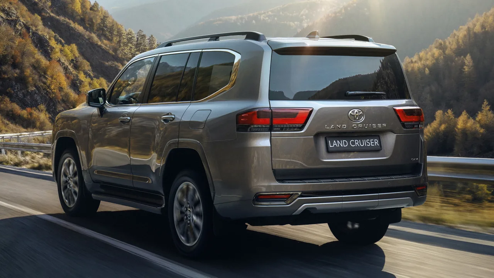
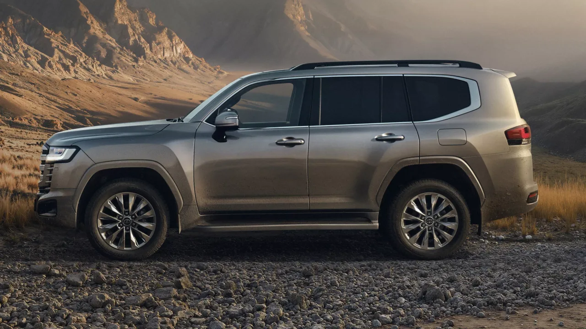
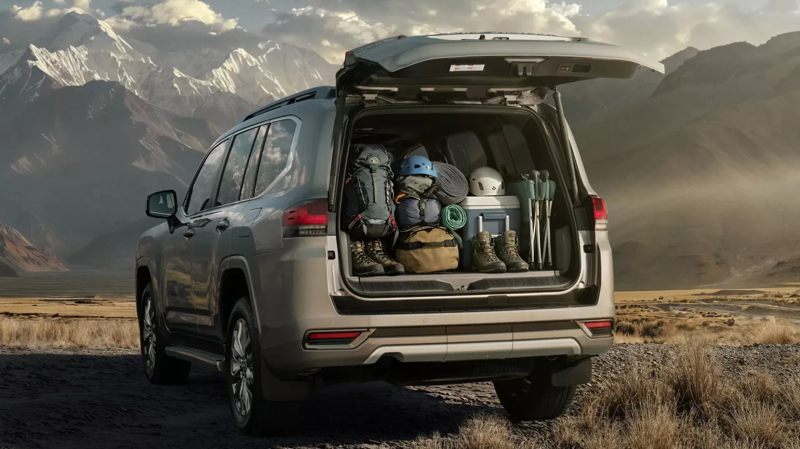

▲ 토요타 랜드크루저 300. 2027년형에서 가솔린 V6가 하이브리드로 대체된다
랜드크루저에서 엔진 이야기는 늘 조심스럽습니다. 오지에서 고장 나지 않는 것이 이 차의 존재 이유이기 때문입니다.
그런데 가솔린 V6가 빠집니다. 토요타는 9월 16일 일본에서 2027년형 랜드크루저 300을 공개할 예정이며, 비전동화 가솔린 V6를 하이브리드로 대체합니다.
1. 무엇이 바뀌나
랜드크루저 300 시리즈는 2021년에 나왔습니다. 2025년 초에 기술과 인포테인먼트 위주의 소폭 개선이 있었고, 이번이 가장 포괄적인 업데이트입니다.
일본은 주요 시장 가운데 마지막으로 업데이트를 받는 곳입니다. 중동과 동유럽, 호주에서는 올해 초 이미 판매가 시작됐습니다.
| 구분 | 기존 | 2027년형 |
|---|---|---|
| 가솔린 | 비전동화 V6 | 폐지 |
| 하이브리드 | 없음 | i-Force Max 추가 |
| 디젤 | 운영 | 유지 + 엔트리 트림 추가 |
2. 457마력이라는 숫자
i-Force Max는 렉서스 LX700h에서 가져온 구성입니다. 3.5리터 트윈터보 V6에 10단 자동변속기 안에 들어간 전기모터 하나를 더했습니다.
합산 출력은 457마력, 토크는 790Nm입니다. 역대 랜드크루저 가운데 가장 높은 수치입니다.
| 항목 | 수치 |
|---|---|
| 엔진 | 3.5리터 트윈터보 V6 |
| 모터 | 10단 자동변속기 내장형 1개 |
| 합산 출력 | 457마력 |
| 합산 토크 | 790Nm |

▲ 랜드크루저 300. 역대 가장 높은 출력이 하이브리드에서 나온다 ⓒ Carscoops
3. 대가도 있습니다
얻는 것이 있으면 잃는 것도 있습니다. 화물 공간 아래에 배터리가 들어가면서 연료탱크 용량이 80리터에서 68리터로 줄었습니다.
무게도 늘었습니다. 하이브리드 시스템은 폐지되는 가솔린 V6 대비 170kg을 더합니다. 오프로더에서 무게 증가는 단순한 숫자가 아닙니다.
| 항목 | 변화 |
|---|---|
| 출력 | 역대 최고(457마력) |
| 토크 | 790Nm |
| 연료탱크 | -12L(80 → 68) |
| 중량 | +170kg |
| 도강 능력 | 700mm 유지 |
📍 연료탱크가 줄면 무엇이 달라지나
랜드크루저를 오지에서 쓰는 이유 가운데 하나는 주유소 사이 거리를 감당하는 능력입니다.
탱크가 12리터 줄면 하이브리드 효율 개선분과 상쇄되는 부분이 있지만, 1회 주유 항속거리는 실사용에서 직접 확인해야 할 항목이 됩니다.
4. 도강 700mm는 지켰습니다
가장 우려됐던 부분은 방어했습니다. 배터리를 실으면서도 700mm 도강 능력을 유지했습니다. 배터리팩에 방수 처리를 했기 때문입니다.
전동화 SUV에서 도강 능력이 깎이는 사례가 적지 않다는 점을 생각하면, 이 부분은 랜드크루저가 무엇을 포기하지 않으려 했는지 보여주는 대목입니다.

▲ 배터리팩을 방수 처리해 700mm 도강 능력을 그대로 남겼다 ⓒ Carscoops
5. 어느 트림에 들어가나
일본에서 하이브리드 파워트레인은 ZX와 GR Sport 트림에 한정됩니다. 플래그십인 ZX는 새로 디자인된 프런트 범퍼 하단부로 구분됩니다.
동시에 디젤 라인업에는 새로운 엔트리 트림이 추가됩니다. 위쪽은 하이브리드로 올리고 아래쪽은 디젤로 넓히는 구성입니다.

▲ 배터리는 화물 공간 아래로 들어간다. 적재 활용도에 영향을 주는 부분이다 ⓒ Carscoops
6. 국내는 어떻게 되나
이번 발표는 일본 시장 기준입니다. 중동·동유럽·호주에는 이미 유사한 업데이트가 적용됐습니다.
국내 도입 여부와 시기, 트림 구성은 별도로 확인해야 합니다. 다만 비전동화 가솔린 V6가 빠지는 흐름 자체는 시장을 가리지 않고 진행 중이라는 점은 분명합니다.